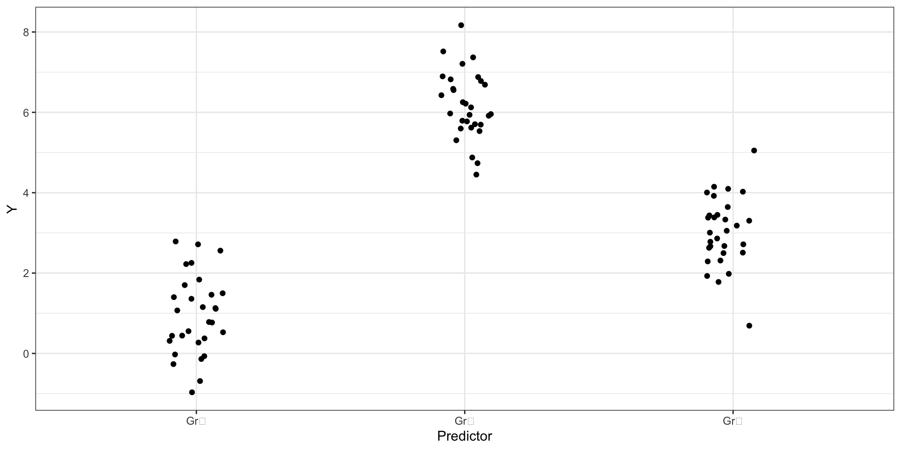
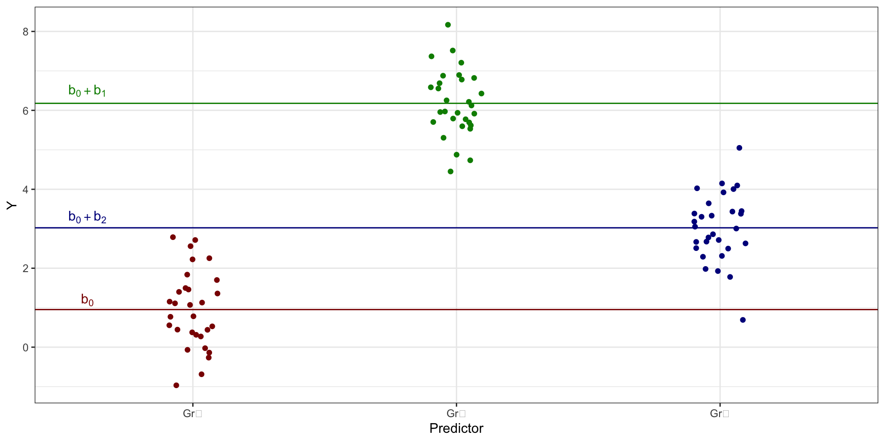
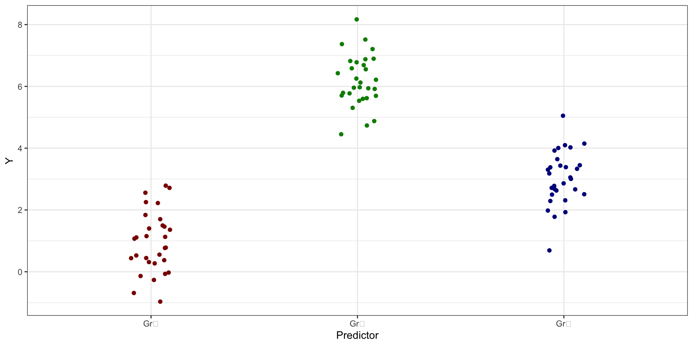
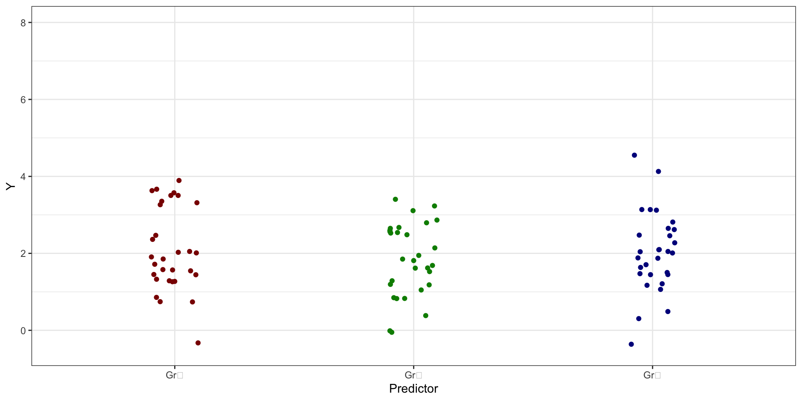
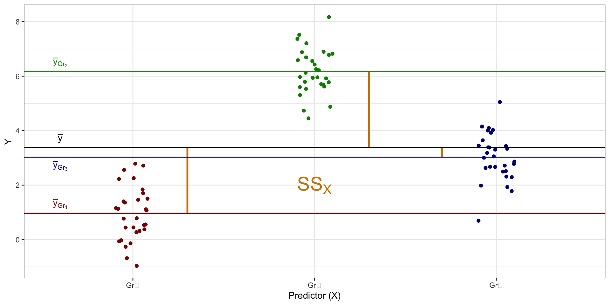
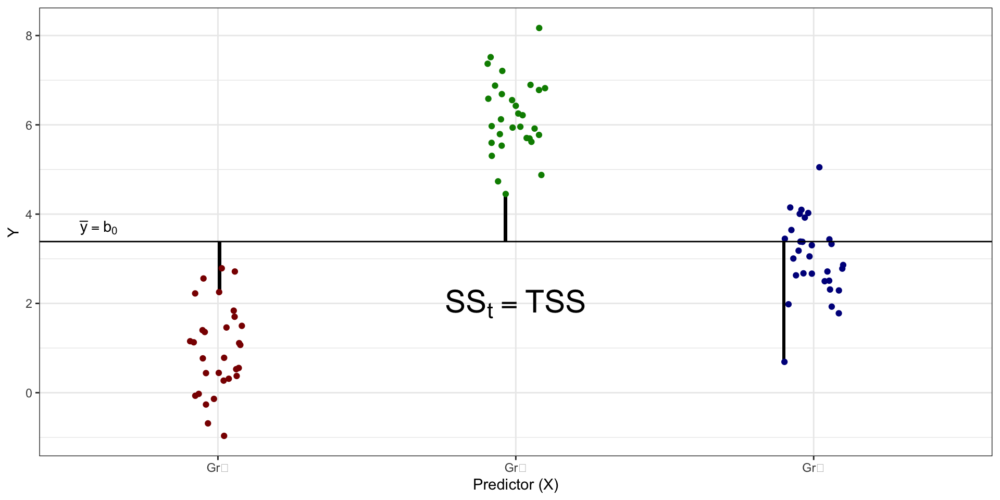
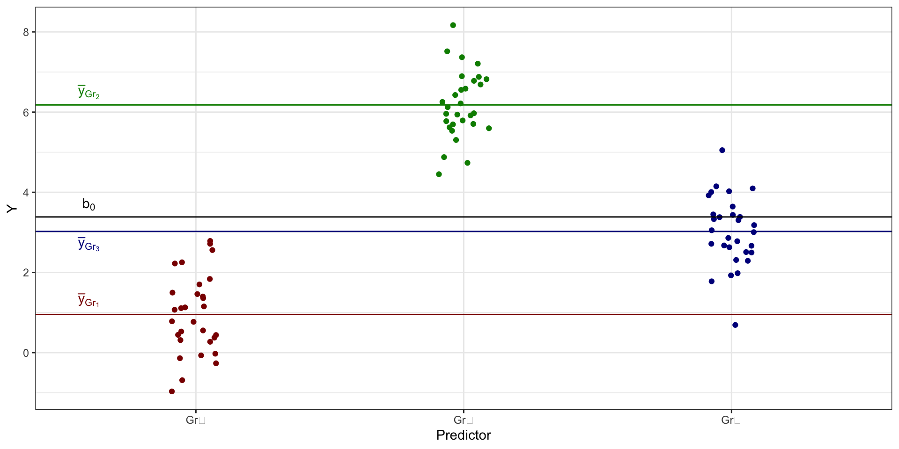
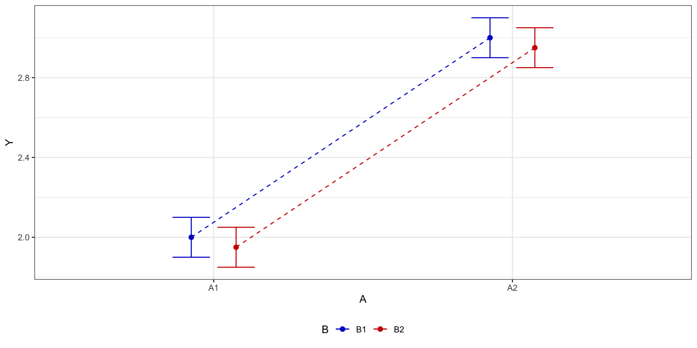
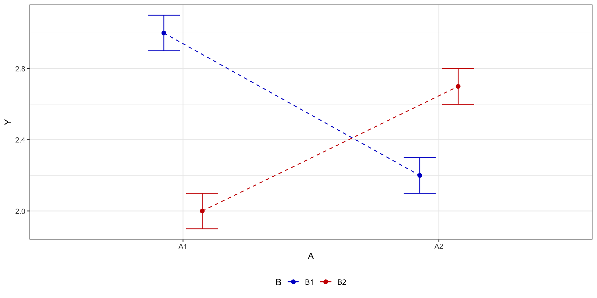

L9 // Дисперсионный анализ. Ковариационный анализ
Что будет?
- Регрессия только с категориальными предикторами
- Способы подбора коэффициентом линейной регрессии
- Однофакторный дисперсионный анализ
- Многофакторный дисперсионный анализ
- Ковариационный анализ
- Контрасты
L9.1 // Однофакторный дисперсионный анализ
Регрессия только с категориальными предикторами
\[ \hat y_i = b_0 + b_1 I, \]
- \(I\) — переменная-индикатор:
- \(I = 0\), если наблюдение относится к первой группе 1
- \(I = 1\), если наблюдение относится ко второй группе)
\[ \begin{cases} I = 0 &: \hat y_i = b_0 \\ I = 1 &: \hat y_i = b_0 + b_1 \end{cases} \]
Три группы по категориальной переменной
\[ \hat y_i = b_0 + b_1 I_{\text{Gr}_2} + b_2 I_{\text{Gr}_3}, \]
- \(I_{\text{Gr}_2}\) — принадлежность ко второй группе
- \(I_{\text{Gr}_2} = 0\), если наблюдение не относится ко второй группе
- \(I_{\text{Gr}_2} = 1\), если наблюдение относится ко второй группе
- \(I_{\text{Gr}_3}\) — наблюдения к третьей группе
- \(I_{\text{Gr}_3} = 0\), если наблюдение не относится к третьей группе
- \(I_{\text{Gr}_3} = 1\), если наблюдение относится к третьей группе
\[ \begin{cases} I_{\text{Gr}_2} = 0 \wedge I_{\text{Gr}_3} = 0 &: \hat y_i = b_0 & (\text{Group 1})\\ I_{\text{Gr}_2} = 1 \wedge I_{\text{Gr}_3} = 0 &: \hat y_i = b_0 + b_1 & (\text{Group 2}) \\ I_{\text{Gr}_2} = 0 \wedge I_{\text{Gr}_3} = 1 &: \hat y_i = b_0 + b_2 & (\text{Group 3}) \end{cases} \]
Таблица кодировки категориального предиктора
| Группа | \(I_1 = x_1\) | \(I_2 = x_2\) |
|---|---|---|
| \(\text{Gr}_1\) | 0 | 0 |
| \(\text{Gr}_2\) | 1 | 0 |
| \(\text{Gr}_3\) | 0 | 1 |
\[ \hat y_i = b_0 + b_1 x_1 + b_2 x_2 \]
Общий случай
\[ \hat y_i = b_0 + b_1 x_1 + b_2 x_2 + \dots + b_{k-1}x_{k-1} \]
| Группа | \(x_1\) | \(x_2\) | \(\dots\) | \(x_{k-2}\) | \(x_{k-1}\) |
|---|---|---|---|---|---|
| \(\text{Gr}_1\) | 0 | 0 | \(\dots\) | 0 | 0 |
| \(\text{Gr}_2\) | 1 | 0 | \(\dots\) | 0 | 0 |
| \(\text{Gr}_3\) | 0 | 1 | \(\dots\) | 0 | 0 |
| \(\vdots\) | \(\vdots\) | \(\vdots\) | \(\ddots\) | \(\vdots\) | \(\vdots\) |
| \(\text{Gr}_{k-1}\) | 0 | 0 | \(\dots\) | 1 | 0 |
| \(\text{Gr}_k\) | 0 | 0 | \(\dots\) | 0 | 1 |
Что происходит в данных?
Средние групп
Средние групп vs интерсепты модели
\[ \cases{ \bar y_{\text{Gr}_1} = b_0 \\ \bar y_{\text{Gr}_2} = b_0 + b_1 \\ \bar y_{\text{Gr}_3} = b_0 + b_2 \\ } \]
Параметризация индикаторов
- одна из групп по категориальной переменной берется в качестве базовой
- её интерсепт будет обозначен как \(b_0\)
- для остальных групп подбираются поправочные коэффициенты (\(b_1\), \(b_2\), \(...\), \(b_{k-1}\))
- определяют различия в интерсептах между этими группами и базовым уровнем
Параметризация эффектов
Запись модели в параметризации эффектов
\[ \hat y_i = b_0 + b_1 x_1 + b_2 x_2 \]
- коэффициенты показывают отклонения [средних] групп от общего среднего
- то есть эффект предиктора для конкретной группы
- интерсепт для третьей группы
Gr₃оказывает равен \(b_0 - b_1 - b_2\)
Таблица кодировки предикторов для параметризации эффектов
| Группа | \(x_1\) | \(x_2\) |
|---|---|---|
| \(\text{Gr}_1\) | 1 | 0 |
| \(\text{Gr}_2\) | 0 | 1 |
| \(\text{Gr}_3\) | −1 | −1 |
Чем полезна полученная модель?
- если связь между целевой переменной и предиктором есть, то:

- если же связи нет, то:

Структура изменчивости данных
- общая изменчивость, или общая сумма квадратов (total sum of squares, \(\text{SS}_t\))
Структура изменчивости данных
факторная изменчивость, или объясненная сумма квадратов (explained sum of squares, \(\text{SS}_X\))
Структура изменчивости данных
- случайная изменчивость, или сумма квадратов ошибок (error sum of squares, \(\text{SS}_e\))
Изменчивость данных и регрессионная модель


Изменчивость данных в формулах
\[ \begin{split} \text{TSS} &= \text{SS}_t = \displaystyle \sum_{i=1}^n (\bar y - y_i)^2, \\ \text{ESS} &= \text{SS}_X = \displaystyle \sum_{j=1}^k n_j \cdot (\bar y - \bar y_j)^2, \\ \text{RSS} &= \text{SS}_e = \displaystyle \sum_{j=1}^k \sum_{i=1}^{n_j} (\bar y_j - \bar y_{ji})^2, \end{split} \]
\(n\) — общее количество наблюдений, \(n_j\) — количество наблюдений в конкретной \(j\)-ой группе, \(k\) — количество групп.
Что мы пытаемся описать?
- связь между предиктором и целевой переменной есть:

- связи между предиктором и целевой переменной нет:
Факторная и случайная изменчивость
- В первом случае, когда закономерность есть, мы получим ситуацию, когда факторная изменчивость будет больше, чем случайная, то есть \(\text{SS}_X > \text{SS}_e\).
- В втором случае, когда закономерности нет, мы получим ситуацию, когда факторная изменчивость будет меньше (или, по крайней мере, равна), чем случайная, то есть \(\text{SS}_X \leq \text{SS}_e\).
Тестирование гипотез в однофакторном дисперсионном анализе
\[ \begin{split} H_0&: \mu_0 = \mu_1 = \mu_2 = \ldots = \mu_k \\ H_1&: \exists \, j_1, j_2: \mu_{j_1} \neq \mu_{j_2} \end{split} \]
\[ \begin{split} \text{MS}_t &= \frac{\text{SS}_t}{n-1} = \frac{\text{TSS}}{n-1} = \frac{\sum_{i=1}^n (\bar y - y_i)}{n-1} \\ \text{MS}_X &= \frac{\text{SS}_X}{k-1} = \frac{\text{ESS}}{k-1} = \frac{n_j \cdot \sum_{j=1}^k (\bar y - \bar y_j)}{k-1} \\ \text{MS}_e &= \frac{\text{SS}_e}{n-k} = \frac{\text{RSS}}{n-k} = \frac{\sum_{j=1}^k \sum_{i=1}^{n_j} (\bar y_j - \bar y_{ji})}{n-k} \end{split} \]
F-статистика
\[ F = \frac{\text{MS}_X}{\text{MS}_e} \overset{H_0}{\thicksim} F(\text{df}_{\text{MS}_X}, \text{df}_{\text{MS}_e}) \]
Если
- не получено статистически значимого результата, то у нас нет оснований говорить, что между какими-либо группами есть различия,
а если
- получен статистически значимый результат, то мы можем говорить, что между какими-либо двумя группами есть различия.
Размер эффекта
Размер эффекта — это доля объясненной фактором дисперсии от всей дисперсии данных
\[ \eta^2 = \frac{\text{ESS}}{\text{TSS}} = \frac{\text{SS}_X}{\text{SS}_e} \]
| Значение \(\eta^2\) | Размер эффекта |
|---|---|
| \(0.01\) | Малый (small) |
| \(0.06\) | Средний (medium) |
| \(0.14\) | Большой (large) |
Попарные сравнения
- Статистически значимый результат дисперсионного анализа — хотя бы двумя групами есть различия
- но между какими?
- Задача попарных сравнений — сравнить попарно все группы друг с другом
- берется t-статистика
\[ \begin{split} H_0 &: \mu_1 = \mu_2 \\ H_1 &: \mu_1 \neq \mu_2 \end{split} \]
\[ t = \frac{\bar X_1 - \bar X_2}{\displaystyle \sqrt{\frac{s_1^2}{n_1} + \frac{s_2^2}{n_2}}} \overset{H_0}{\thicksim} t(\text{df}), \]
- \(\bar X_1\) и \(\bar X_2\) — средние сравниваемых групп
- \(s_1^2\) и \(s_2^2\) — дисперсии сравниваемых групп
- \(n_1\) и \(n_2\) — количество наблюдений в сравниваемых группах.
Проблема множественных сравнений
- необходимо скорректировать уровень значимости
- поправки Бонферрони, Холма, Тьюки
Итого,
- если мы получили статистически значимый результат дисперсионного анализа, необходимо провести попарные сравнения (другое название — post hoc тесты), чтобы выяснить, между какими именно группами есть различия
- если мы не получили статистически значимый результат дисперсионного анализа, проводить попарные сравнения не нужно, так как сама нулевая гипотеза дисперсионного анализа говорит о том, что различий между группами нет
Допущения дисперсионного анализа
- Количественная непрерывная зависимая переменная
- Независимые между собой выборки
- А если зависимые, то надо это учесть в модели
- Нормальное распределение признака в генеральных совокупностях, из которых извлечены выборки
- Равенство (гомогенность) дисперсий изучаемого признака в генеральных совокупностях из которых извлечены выборки
- Проверяется с помощью теста Левина
- Независимые наблюдения в каждой из выборок
Однофакторный дисперсионный анализ
- мы рассматривали ситуацию, когда нас интересует связь между количественной и одной категориальной переменной
- в этом случае с точки зрения математической модели в ней будет один предиктор
Две группы
Если категориальная переменная задаёт только две группы, можно и нужно ли в этом случае использовать дисперсионный анализ или достаточно только t-теста?
- сравнения двух групп нужно использовать двухвыборочный t-тест
- использовать дисперсиионный анализ также можно
- попарные сравнения в этом случае бессмысленны
Более того:
\[ F = t^2 \]
L9.3 // Многофакторный дисперсионный анализ
Дизайн экспериментального исследования
- Межгрупповой план
- две или более групп
- каждая проходит различные экспериментальные условия
- один испытуемый проходит одно экспериментальное условие
- разные испытуемые проходят разные экспериментальные условия
- Внутригрупповой план
- одна группа испытуемых
- проходит все экспериментальные условия
- каждый испытуемый проходит все экспериментальные условия
Типы эффектов в дисперсионном анализе
- межгрупповые эффекты (between-subject effects)
- эффекты межгрупповых переменных (межгрупповой план)
- внутригрупповые эффекты (within-subject effects)
- эффекты внутригрупповых переменных (внутригрупповой план)
Смешанный экспериментальный план — и межгрупповые, и внутригрупповые переменные
- в модели будут оба типа эффектов
Визуализация связи между категориальной и количественной переменными
Связь есть:
Связи нет:
Два фактора
- \(A\) и \(B\)
- оба фактора имеют по два уровня — \(A_1\), \(A_2\) и \(B_1\), \(B_2\)
Два фактора: нет эффектов
Два фактора: эффект только одного

Два фактора: эффекты обоих

Два фактора: эффект взаимодействия

Взаимодействие факторов
Взаимодействие факторов говорит о том, что один фактор влияет на целевую переменную по-разному в зависимости от уровня второго фактора.
- если мы будем смотреть только на основные эффекты, то можем потерять важные части закономерности:
- значимое взаимодействие затрудняет интерпретацию основных эффектов
При планировании исследования сразу подумайте, как вы будете анализировать данные — что будет входить в модель в качестве основных предикторов, что в качестве ковариат, и какие взаимодействия в ней будут.
Partial \(\eta^2\)
\[ \eta^2_p = \frac{\text{SS}_X}{\text{SS}_X + \text{SS}_e} \]
Повторные измерения
- внутригрупповые эффекты — каждый респондент проходит все условия эксперимента
- наблюдения связаны друг с другом
- нарушается допущение о независимости наблюдений
- возникает дисперсионный анализ с повторными измерениями (repeated measures ANOVA, rm ANOVA)
Сферичность
- допущение о том, что дисперсии разностей между всеми парами уровней фактора равны
- его нарушение приводит к увеличению вероятности ошибки I рода
Типы сумм квадратов
- Первый (I) тип сумм квадратов
- последовательные тесты
- величина эффекта зависит от объёма выборки
- результат вычислений зависит от порядка включения факторов в модель
- не используется
- Второй (II) тип сумм квадратов
- иерархические тесты
- результаты не зависят от порядка включения факторов в модель
- величина эффекта зависит от объема выборки
- хорошо работает на сбалансированных данных
- Третий (III) тип сумм квадратов
- проводит частные тесты
- результаты не зависят от порядка включения факторов в модель
- результаты не зависят от объёма выборки.
- используют в случае несбалансированных данных
Когда какой тип использовать?
- Если у нас экспериментальный дизайн исследования
- на уровне планирования сделано всё возможное, чтобы группы были уравнены
- у нас есть возможность добрать испытуемых
- по умолчанию используем II тип суммы квадратов
- Если же у нас, например, опросниковое исследование или такой дизайн, где респонденты разбиваются на группы post factum
- мы не можем гарантировать, что эти группы окажутся равными по численности
- используем III типа суммы квадратов
Конкретные различия
- даже при наличии нескольких групп наблюдений нас могут интересовать только конкретные различия
Пусть есть ситуация исследования в области образования
- Задача — понять, как сказывается на качестве образования комбинация разных форматов обучения
- Целевая переменная — итоговый балл студента по курсу
- Три академические группы студентов:
- в одной — лекции (\(\text{L}\))
- во второй — групповая дискуссия (\(\text{G}\))
- в третьей — комбинированный формат (и лекции, и групповая дискуссия — \(\text{C}\)).
Нас не интересуют различия между группами \(\text{L}\) и \(\text{G}\) — обе эти группы выступают как контрольные.
Интересно различие между группами \(\text{C}\) и \(\text{L+G}\).
Контрасты
- взять и соединить две группы \(\text{L}\) и \(\text{G}\) не очень правомерно
- могут различаться их средние
- необходимо учесть «истинную» (с учетом разделения на эти группы) случайную изменчивость.
Для этого существуют контрасты.
Тестирование гипотез в контрастах
\[ \begin{split} H_0 &: \mu_{\text{C}} = \mu_{\text{L+G}} \\ H_0 &: \mu_{\text{C}} \neq \mu_{\text{L+G}} \end{split} \]
\[ F = \frac{\text{MS}_\text{cont}}{\text{MS}_e}, \]
- \(\text{MS}_e\) — это случайная изменчивость
- \(\text{MS}_\text{cont}\) — «контрастная» изменчивость
\[ \text{SS}_e = \displaystyle \sum_{j = \text{\{L,G,C\}}} \sum_{i=1}^{n_j} (\bar y_j - \bar y_{ji}), \]
\(\text{MS}_\text{cont}\)
\[ \text{MS}_\text{cont} = \frac{\text{SS}_\text{cont}}{\text{df}_\text{cont}} \]
\[ \text{df}_\text{cont} = 2-1 = 1 \]
\[ \begin{split} \text{SS}_\text{cont} & = \displaystyle \sum_{j=\{\text{C, L+G}\}} n_j \cdot (\bar y - \bar y_j)^2 = \\ & = n_\text{C} \cdot (\bar y - \bar y_\text{C})^2 + n_\text{L+G} \cdot (\bar y - \bar y_\text{L+G})^2 = \\ &= n_\text{C} \cdot (\bar y - \bar y_\text{C})^2 + (n_\text{L} + n_\text{G}) \cdot \left(\bar y - \frac{\bar y_\text{L} + \bar y_\text{G}}{2} \right)^2 \end{split} \]
Для групп \(\text{C}\) и \(\text{G}\)
\[ \begin{split} H_0 &: \mu_{\text{C}} = \mu_{\text{G}} \\ H_0 &: \mu_{\text{C}} \neq \mu_{\text{G}} \end{split} \]
\[ F = \frac{\text{MS}_\text{cont}}{\text{MS}_e}, \]
\[ \text{SS}_e = \displaystyle \sum_{j = \text{\{L,G,C\}}} \sum_{i=1}^{n_j} (\bar y_j - \bar y_{ji}), \]
\[ \text{MS}_\text{cont} = \frac{\text{SS}_\text{cont}}{\text{df}_\text{cont}} \]
\[ \begin{split} \text{SS}_\text{cont} & = \displaystyle \sum_{j=\{\text{C,G}\}} n_j \cdot (\bar y - \bar y_j)^2 = \\ & = n_\text{C} \cdot (\bar y - \bar y_\text{C})^2 + n_\text{G} \cdot (\bar y - \bar y_\text{G})^2 \end{split} \]
Контрасты и попарные сравнения
- в случае контрастов мы делаем конкретные сравнения либо группами наблюдений
- делать попарные сравнения нам не нужно
- результаты контрастов уже показывают интересующие нас различия
L9.3 // Ковариационный анализ
Модель ковариационного анализа
- analysis of covariance, ANCOVA
- модель множественной линейной регрессии без взаимодействия дискретных и непрерывных предикторов
- модель дисперсионного анализа, в которую включён (включены) один или несколько непрерывных предикторов
- непрерывный предиктор называется ковариатой
\[ \hat y_i = b_0 + b_1 I + b_2 x_2 = b_0 + b_1 x_1 + b_2 x_2 \]
- \(x_1\) — категориальный предиктор (принимает значения \(0\) и \(1\))
- \(x_2\) — ковариата, или непрерывный предиктор
Зачем ковариационный анализ?
- на целевую переменную могут влиять, помимо интересующих нас факторов, еще и другие
- различия, обнаруживаемые нами в ходе дисперсионного анализа, могут быть связаны не с влиянием фактора, а с действием каких-либо сторонних переменных
- введение ковариаты позволяет учесть действие таких переменных
- ковариата объяснит часть дисперсии данных
- возможно, значимость фактора пропадет
Итоги
- Параметризация индикаторов и параметризация эффектов
- Тестирование гипотез в однофакторной дисперсионной анализе
- Попарные сравнения
- Многофакторный дисперсионный анализ и взаимодействие факторов
- Контрасты
- Ковариаты и ковариационнный анализ
L9 // Дисперсионный анализ. Ковариационный анализ
Антон Ангельгардт

WLM 2023